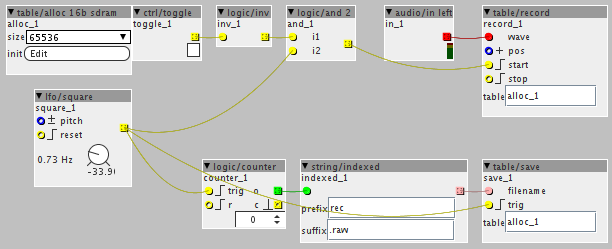

Is there an object yet to record audio? I did not find anything in objects/wave.
I guess i could stitch something together will all the functions in that directory...
Recording audio to sdcard
fokke
#1
anon5189335
#2
Check this post
I know it doesnt record to Sd card.... That would be nice. Maybe it is all ready possible to write audio to sd card. You can record data, like random numbers etc., so why not audio? 
fokke
#3
Hi jaffasplaffa,
It's a cool patch! Indeed i'm more looking for something to record a 3 hour jam . I guess i will try to write something myself and post it here.
johannes
#4
There is a streaming audio record object hidden in the sourcecode, is src/main/java/generatedobjects/wave.java
but it is not very stable. SDCard performance is far worse when writing small buffers than it is for reading. This was developed before sdram was in the cards.
timvets
#5
just an idea, but how about using a table and write chunks to SD-card using table/save?
e.g. 65536 samples should be 1.3653333333333333 seconds long at 48kHz,
so the frequency of the LFO in attached patch should be 0.732421875
but it's 0.73+"something"...
(not tested)

SD_Record.axp (3.7 KB)
Should something to this effect work, it's easy to concatenate the chunks afterwards...
johannes
#6
@timvets
Uninterrupted recording needs threading and double buffering, if you are not aware of these concepts, just don't try. Your patch shows more problems than solutions.
fokke
#7
I found the source and will give it a try. Do you think adding a ringbuffer or increasing the buffersize could solve the hiccups?
johannes
#8
The buffersize is defined as
SDREADFILEPINGPONGSIZE
in streamer.h
I have been able to make recordings using this object, and even full duplex recording+playing a mono stream, but I did feel it was not very stable, one card would work, another would not...
I think the "sdbenchmark" object should be improved to report not only average speed, but also worst case peaks, because in real time this is what matters.
SirSickSik
#9
I'm trying to make a sample to SDram recorder, but somehow I can't get it to work..
This is how the patch is right now (I have tried several other combinations for the file name: .wav/.raw/different name length)
{kind=link}
When I press record, the audio is recorded into the flash and can be played back using the table/play.
Though, when I hit the "save" button, to save the table onto the SDcard and then hit the "play" button again, it says:
"Axoloti says: Open failed
Axoloti says: Write failed
Axoloti says: Close failed"
and doesn't replay the wave from the file.
So.. what is missing/am I doing wrong??
I thought a simple writing and reading should go just fine like this..
ps I just checked the helpfile for the recorder&save and even this one refuses to open/write/close...
anon5189335
#10
I think you need to modulate the position on both record and play objects. For example use an lfo to scan through the tables.
Haven't got my boards ATM so can't check it.
EDIT:
When you use an lfo for this, you have to set the record button to reset the lfo. Or else the recording will start in the middle of the table or wherever the lfo is located at the time you push record.
SirSickSik
#11
that's not needed, these objects "start" and "stop" playing by themselves by triggering the respective pins.
Problem definitely arises when trying to save the table to the SDcard as it mentions:
Axoloti says: Open failed
Axoloti says: Write failed
Axoloti says: Close failed
when hitting the save-button.
So no matter what I do with that position pin.. there's nothing to read to begin with for the object..
johannes
#12
Do you have other "signs of life" of the sdcard?
Like, can you get the contents with Window->File manager?
There is a known issue with table/save: it will cause glitches in audio when writing a file, and will cause a "watchdog reset" when writing large files. But you appear to get no access to sdcard.
Simultaneous reading and writing to the same file will also cause trouble...
Test release 1.0.8 improved error reporting on sdcard operations.
SirSickSik
#13
In another project I use the SDram delay object, twice, recording 43 seconds each.. and that works.
When looking in the file manager, there isn't a file to be found (haven't uploaded any samples from my computer onto the SDcard either).
As for the simultaneous writing/reading, I'm not doing that.. I'm first recording to a table. After I've finished that, I press the button to save the table to SDcard, but it doesn't do that.
As for the 32b allocation, I've also tried 8bit and 16bit...
johannes
#14
SDram is unrelated to SDcard. The only similarity is the SD letters.
Sdram
- is volatile storage (contents lost when you remove power)
- allows random access (read a single sample from a given location)
Sdcard
- non-volatile storage, preserves contents when you remove power, "flash" memory
- only allows block access, can't just read a single sample but needs to setup a block transfer, which is extremely inefficient when only a single sample is needed.
MIDI transpose patch example
SirSickSik
#15
sorry, problem is fixed... sdcard seemed to got out when I re-inserted the cable.. shame
it's working now haha
SirSickSik
#16
Seems to work fine now. I have recorded 64 samples to the card and I'm able to play through them at quarter notes at 300BPM, changing sample at each gate using a counter.. without hickups
axoman
#20
Just a heads-up to point out that the three messages posted above this one appear to be posted by spammers bringing attention to products.
- Each post is their only post
- Each post is a link
- Each posted the day they joined
- Each posted only in this thread
I doubt it is coincidence. I was suspicious after the first, the second made me more so, and the third pretty much sets my suspicions in stone as far as I'm concerned. Should my suspicions prove unfounded, then I do apologise in advance to the above mentioned trio of suspected spammers.
axoman
#22
I reckon we need some sort of counter-intelligent bot that can rid the web of these bots, and hopefully, rid the web of the leading curators of this abusive technology right along with it (Google).
Without that, we're dependent solely upon wizards to magic it all away